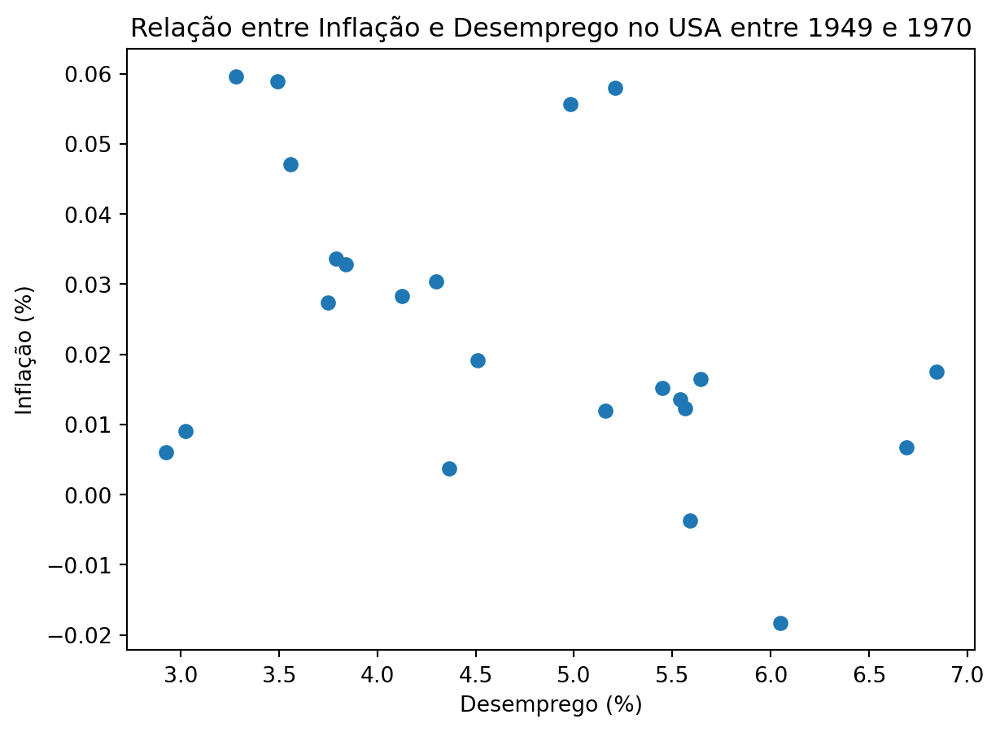

inflacao desemprego
period
1948 0.027339 3.750000
1949 -0.018295 6.050000
1950 0.058026 5.208333
1951 0.059648 3.283333
1952 0.009067 3.025000Curva de Phillipis - Das Primeiras Levadas ao SAMBA
Resumo
<<<<<<<<<<<< resumo >>>>>>>>>>>>>>>
Primeiras Levadas
<<<<<<<<<<<<<<<<<< motivações historicas e nomes >>>>>>>>>>>>>>>
A Definição dos Salários e Preços
<<<<<<<<<<<< Breve Introdução a seção >>>>>>>>>>>>>>>
Salários:
<<<<<<<<<<<< discussao microeconomica >>>>>>>>>>
\[W = P^{e} F(u, z)\]
Sendo \(P^{e}\) o nível dos preços esperados, \(u\) a taxa de desemprego e \(z\) uma variável subjacente que representa todo o custo de oportunidade envolvido a decisão de procurar ou não um emprego, bem como as negociações coletivas de salários. Para esse caso, conceitualmente, espera-se:
\[\frac{\partial F}{\partial u} < 0, \frac{\partial F}{\partial z} > 0\]
Isso é, espera-se que um aumento em \(u\) esteja associado a uma redução nos níveis de salário e um aumento em \(z\) esteja associado a um aumento nos níveis de salário.
Neste caso, como as únicas suposições acerca de \(F(u, z)\) são referente as suas derivadas parciais, há uma “licença poética” para se especificar esta função. É sempre interessante pensar em parâmetros que possam ser interpretados ou que, pelo menos, facilite os cálculos. No caso, pode-se supor, como faz o Blanchard, uma relação linear entre \(u\) e \(z\):
\[F(u, z) = 1 - \alpha u + z \]
No caso, os coeficiente \(\alpha\) e \(z\) teriam valor maior que zero. Nesta especificação, é respeitado a suposição das derivadas parciais. Essa é uma notação que facilita os cálculos subsequentes, mas nada impede que se especifique uma relação como:
\[F(u, z) = 1 + \alpha \frac{1}{u} + z \]
Onde:
\[\frac{\partial F}{\partial u} = -\frac{\alpha}{u²} < 0, \frac{\partial F}{\partial z} = 1 > 0\]
Preços:
<<<<<<<<<<<<<<<<<< discussao microeconomica >>>>>>>>>>>>>>>>>>>>>
\[P = (1 + \mu)W\]
Sendo \(\mu\) a margem de lucro e \(W\) o custo marginal de produção, no caso representado pelo nível de salário. Nesse caso, pode-se substituir a equação dos salários (?@eq-wage), tendo, por fim a equação:
\[P = (1 + \mu) P^{e} F(u, z)\]
Onde, novamente, \(F(u, z)\) pode ter a cara da ?@eq-F-1, ?@eq-F-2 ou outra especificação desejada.
Inflação, Inflação Esperada e Desemprego
Discutido o surgimento do nível de Preços e relação com o Desemprego, é hora de discutir como a Inflação se relaciona com o Desemprego, que é onde reside a Curva de Phillipis.
No caso, usando a especificação de \(F(u, z)\) da ?@eq-F-1, parte-se da ?@eq-price e chega-se na relação da Inflação \(\pi\):
\[\pi = \pi^{e} + (\mu + z) - \alpha u\]
O cálco é simples, mas cansativo. Pode ser encontrado no Apêndice A.
Um ponto adcional, é que supõe-se que \(\mu\) e \(z\) são fixos ao longo do tempo, neste caso \(\pi\), \(\pi^{t}\) e \(u\) são indexados ao longo do tempo, sendo o modelo da inflação para a espeficação de \(F(u, z)\) da ?@eq-F-1:
\[\pi_{t} = \pi^{e}_{t} + (\mu + z) - \alpha u_{t}\]
Neste caso, o modelo para Inflação indica que:
- Um aumento na expectativa da inflação \(\pi^{e}\), gera um aumento na inflação
- Um aumento da margem de lucro \(\mu\) e do custo de oportunidade do emprego \(z\) gera um aumento na inflação
- Um aumento no desemprego gera uma redução na inflação
A Curva de Phillipis
Versão Inicial
<<<<<<<<<<<< contexto inicial >>>>>>>>>>>
Sendo \(\pi^{e} = 0\), o modelo era dado por:
\[\pi_{t} = (\mu + z) - \alpha u_{t}\]
Este modelo permitiu que os governos controlassem a inflação pensando em uma dada taxa de desemprego \(u_{t}\) desejada.
<<<<<<< historinha do fracasso >>>>>>>>>
Voltando a Taxa Natural de Desemprego, para este modelo inicial, pode-se encontrar analiticamente a taxa \(u_{n}\) apenas zerando \(\pi_{t}\) na ###equação, dado a hipótese de que \(\pi_{e} = 0\):
\[0 = (\mu + z) - \alpha u_{n}\] \[u_{n} = \frac{(\mu + z)}{\alpha}\]
Nesse caso, pode-se dizer que a taxa natural de desemprego aumenta conforme a margem das empresas aumentam, o custo de oportunidade do desemprego aumenta e diminui.
Estimando o Modelo inicial Curva Phillipis
df = pd.merge(inflacao_df, desemprego_df, left_index=True, right_index=True, how='left').dropna()
df.head()| inflacao | desemprego | |
|---|---|---|
| period | ||
| 1948 | 0.027339 | 3.750000 |
| 1949 | -0.018295 | 6.050000 |
| 1950 | 0.058026 | 5.208333 |
| 1951 | 0.059648 | 3.283333 |
| 1952 | 0.009067 | 3.025000 |

Apêndice A:
Construção da ?@eq-inflation-initial e ?@eq-inflation.
Partindo da equação:
\[P_{t} = (1 + \mu) P^{e}_{t} (1 - \alpha u + z)\]
Divide-se os dois lados por \(P_{t-1}\), obtendo-se:
\[\frac{P_{t}}{P_{t-1}} = \frac{P^{e}_{t}}{P^{e}_{t-1}} (1 + \mu) (1 - \alpha u + z)\]
Nesse caso, pode-se substituir \(\frac{P_{t}}{P_{t-1}}\) e \(\frac{P^{e}_{t}}{P^{e}_{t-1}}\) por \(1+\pi\) e \(1+\pi^{e}\), respectivamente, obtendo:
\[1+\pi = (1+\pi^{e})(1 + \mu) (1 - \alpha u + z)\]
Dividindo a equação toda por \((1+\pi^{e})(1 + \mu)\), têm-se:
\[\frac{1+\pi}{(1+\pi^{e})(1 + \mu)} = 1 - \alpha u + z\]
Como trabalha-se com valores percentuais, é possível aproximar \((1+\pi^{e})(1 + \mu)\) por \(1+\pi^{e} + \mu\). Isso porque, da equação \((1+\pi^{e}+ \mu + \pi^{e} \mu)\), o produto \(\pi^{e} \mu\) será de valores próximos de zero. Por exemplo, uma expectativa de inflação \(\pi^{e} = 5\%\) e uma margem \(\mu = 5\%\), originalmente teria-se um valor de \((1+\pi^{e})(1 + \mu) = (1 + 0.05)(1+0.05) = 1.1025\), que pode ser aproximado por \((1+\pi^{e})(1 + \mu) \approx (1 + 0.05 + 0.05) = 1.10\). Tendo, agora, equação:
\[\frac{1+\pi}{(1+\pi^{e} + \mu)} = 1 - \alpha u + z\]
Além disso, é possível, também, dado os valores serem percentuais e supostamente próximos de zero, aproximar a equação \(\frac{1+\pi}{(1+\pi^{e} + \mu)}\) por \({(1+\pi - \pi^{e} - \mu)}\). Aqui a prova é um pouco mais chatinha, mas também passa pelo conceito de que produto de valores percentuais vão gerar números muito próximos de zero. A relação geral é dada por \(\frac{1+x}{(1+y)} \approx 1 + x - y\) e a prova pode ser consultada aqui. Tendo, finalmente, a equação:
\[1+\pi - \pi^{e} - \mu = 1 - \alpha u + z\]
E por fim:
\[\pi =\pi^{e} + (\mu + z) - \alpha u\]
Ou
\[\pi_{t} =\pi^{e}_{t} + (\mu + z) - \alpha u_{t}\]